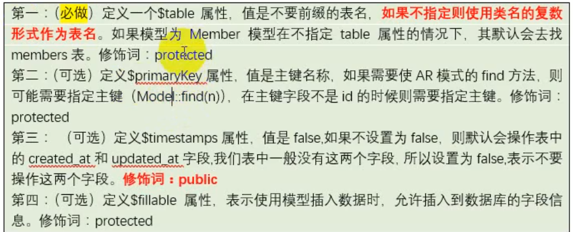

创建项目
- 通过composer创建
1 | composer create-project --prefer-dist laravel/laravel blog 5.4.* |
php artisan 命令
php artisan route:list # 查看路由php artisan make:controller 路径/控制名 # 生成控制器文件1
2
3
4
-php artisan make:其他操作1
2php artisan route:list # 查看应用路由1
2
3
4
5
6
7
8
9
10
11
12
13
14
15
16
17
18
19
20
21
22
23
24
25
26
## 路由
- 在routes目录中的web.php设置
- 路由定义方式
- Route::请求方式("路由表达式",匿名函数或控制响应的方法)
- 常用请求方式：
- get("路由表达式",匿名函数或控制响应的方法)
- post("路由表达式",匿名函数或控制响应的方法)
- any("路由表达式",匿名函数或控制响应的方法)
- match(["请求类型"，...],"路由表达式",匿名函数或控制响应的方法)
- 路由参数(不推荐，可通过url?param传参数)
- 必选参数{param}
- 非必选参数{param?}
- 路由别名
- Route::get( , )->name("别名");
- 可通过获取route("别名")
-Route::请求方法(路由表达式，“控制器名@方法”)1
2
3
4
5
6
7
8
- 路由群组
- Route::group(公共属性数组[前缀、命名空间、中间件等],回调函数)
- 控制器路由
-@foreach($data $k => $v) @endforeach1
2
3
4
5
6
7
8
9
10
11
12
13
14
15
16
17
18
19
20
21
22
23
24
25
26
27
28
29
30
31
32
33
34
35
36
37
38
39
## 控制器接收用户输入
- 使用门面input
- input::get()
- input::all()
- input::only()
- input::except()
- input::has
以上均可以获取get、post方法的信息
- 可在config/app.php的aliases数组中定义长串字符的别名
- 如命名空间
## dd（）：dump+die 用于调试输出
## "/" 与 "." 在某种情况下等效,例如查找视图文件view("home.index") == view("home/index")
## 视图文件的命名于渲染
- 文件名习惯小写
- 文件名单后缀是.blade.php,可以直接使用标签语法{{$title}}（.php不可使用，.balde.php优先级高于.php）,也可使用php原生语法
## campact()函数打包数组，php内置函数
## 模板中直接使用函数
- {{函数名(参数1，参数2...)}},php内置函数或laravel框架的函数
## 循环与选择
- 循环@if() @elseif() @endif1
2
- 选择父:@yield() 子：@extends('模板名') @section() 绑定区块 @endsection()1
2
3
4
## 模板继承和模板包含
- 继承父:@yield() 子：@extends('模板名') @section() 绑定区块 @endsection()1
2
3
4
5
6
7
8
9
# 微信小程序
html的方式
## 模板引入外部静态文件
- 继承1
2
3
4
5
6
7
8
9
10
11
12
13
14
15
16
17
18
19
# 微信小程序
html的方式
- 使用laravel封装的asset函数
## CSRF攻击
- 跨站请求伪造
- 全局函数csrf_token()获取Token值
- html中加入代码
```php+HTML
<input type = "hidden" name = "_token" value = "<?php echo csrf_token(); ?>"
// 等价于
{{csrf_field()}}
// ajax提交使用csrf_token()laravel 默认开启csrf验证
排除某些路由进行csrf验证
在app/Http/Middleware/VerifyCsrfToken.php中修改
模型

seed（简而言之，将测试数据保存到数据库）
- 在laravel的中文文档是这样写的：Laravel 包含一个填充类可以为你的数据库填充测试数据。所有的填充类都放在 database/seeds 目录下。你可以随意为填充类命名， 但是更建议您遵守类似 UsersTableSeeder 的命名规范。通常， Laravel 默认定义了一个 DatabaseSeeder 类。
所以，seed的作用主要是用来填充数据库中的数据。在实际开发过程中，我们通常需要加入一些测试数据，或者保存数据库中的初始数据，防止在开发过程中遇到的数据丢失，加的话还是挺麻烦的。当然，也可以直接导出数据库的表结构和表数据。 - 测试数据较多是可用模型工厂
provider
- provider是laravel程序的核心所在，包括你自己的应用程序，以及所有的 Laravel 核心服务，都是通过服务提供者启动的。一般而言，我们指的是 注册 事物，包括注册服务容器绑定、事件侦听器、中间件，甚至路由。服务提供者是设置你的应用程序的中心所在。
## repository
- repository是数据库抽象层，目的是将应用的数据库操作和核心的业务逻辑分开，保证controller的精致。
- repository提供criteria（标准）和transformer（变压器）来解卦数据库的查询和查询结果的展示，使得各部分分离开来，解开耦合。同时repository接管model层，使得model层专注于数据模型本身的定义，例如：relationship，fillable（可填充）等
- ceiteria
- 所有的Criteria都要实现Criteria接口中的apply方法。
- transformer
- ceiteria